Blog
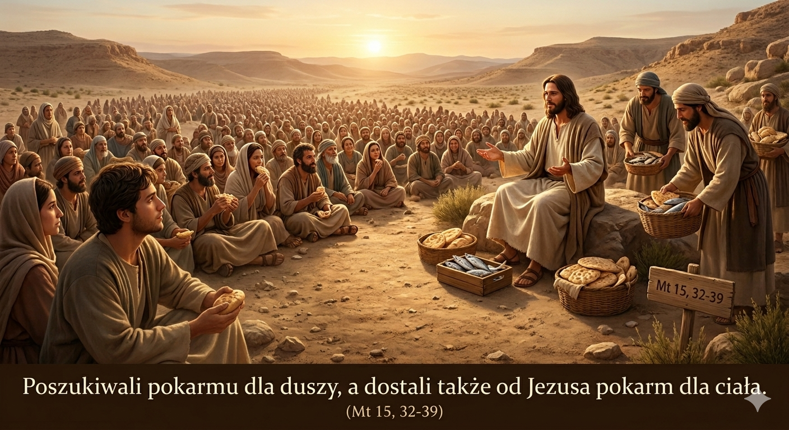
Idźmy na pustkowie?!
Istota autentycznej wiary wyraża się w gotowości do przedłożenia bliskości z Bogiem ponad doczesne troski i życiowy pośpiech, co udowadnia, że radykalne zaufanie oraz odnalezienie własnej „pustyni” pozwala doświadczyć obfitości łask, w której Stwórca z nawiązką zaspokaja zarówno duchowe, jak i materialne potrzeby człowieka.
9 Maja 2026
Czytaj więcej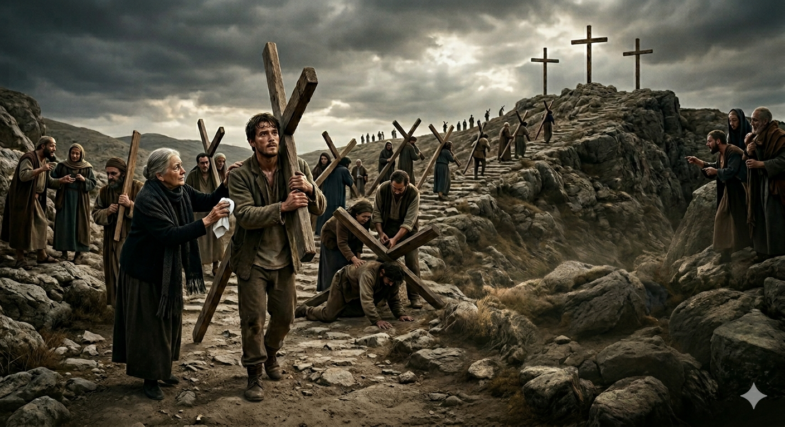
Nasza osobista droga krzyżowa
Duchowe odrodzenie i pełnia życia wymagają od nas aktu pokornego obumarcia dla własnego ego oraz podjęcia osobistego krzyża, co poprzez uciszenie chłodnego intelektu na rzecz głosu serca pozwala zjednoczyć się z ofiarą Chrystusa i przynieść obfity owoc w wymiarze nadprzyrodzonym.
7 Marca 2026
Czytaj więcej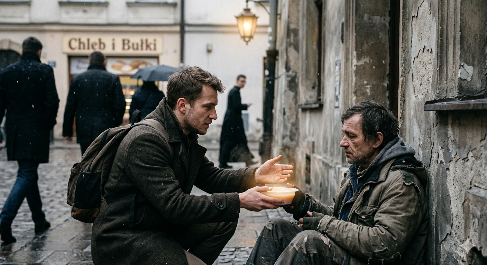
Inni ludzie
Prawdziwa wielkość człowieka przejawia się w uważności na drugą osobę i gotowości do zatrzymania się w codziennym biegu, aby poprzez gest empatii lub konkretne wsparcie pomóc bliźniemu dźwigać ciężar jego egzystencji, dostrzegając w cudzej słabości odbicie własnych niedoskonałości oraz szansę na spotkanie z sacrum w drugim człowieku.
1 Marca 2026
Czytaj więcej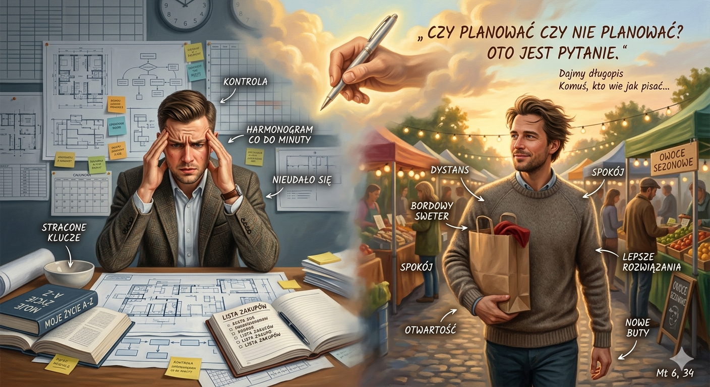
Czy planować czy nie planować? Oto jest pytanie.
Harmonijna egzystencja wymaga od nas porzucenia iluzji absolutnej kontroli i sztywnych planów na rzecz pokornej otwartości na to, co przynosi los, gdyż dopiero poprzez odpuszczenie własnych oczekiwań i zaufanie wyższemu prowadzeniu stajemy się zdolni do przyjęcia darów znacznie cenniejszych niż te, które sami potrafilibyśmy zaprojektować.
21 Lutego 2026
Czytaj więcej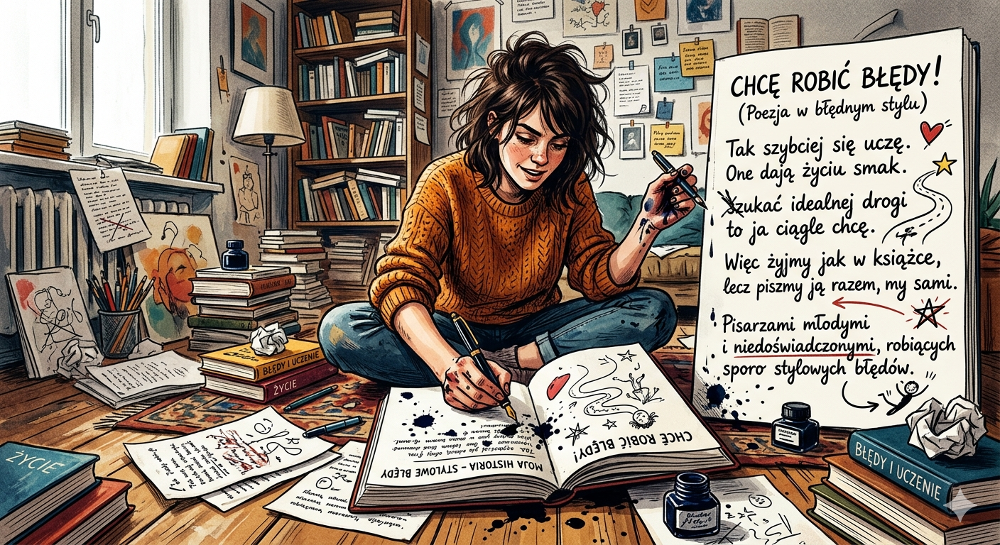
Chcę robić błędy (Poezja w błędnym stylu)
Pełnia ludzkiego doświadczenia kształtuje się poprzez akceptację własnej niedoskonałości i odwagę do popełniania błędów, które zamiast porażką, stają się fundamentem autentycznego rozwoju oraz narzędziem do samodzielnego pisania unikalnej historii własnego życia.
8 Lutego 2026
Czytaj więcej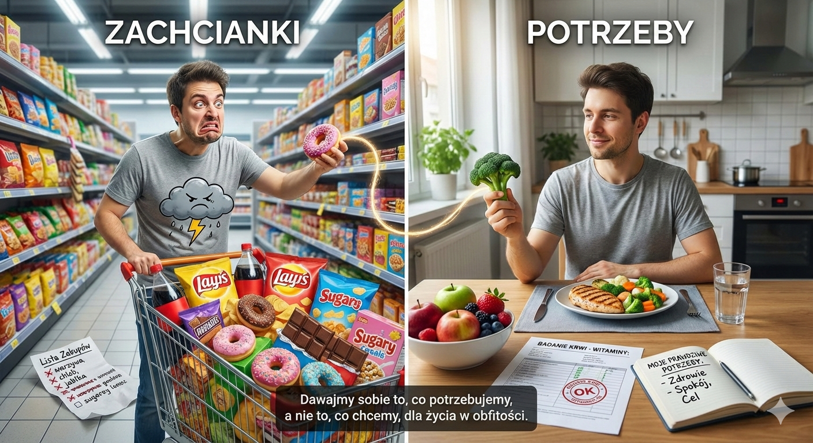
Potrzeby i zachcianki
Prawdziwa obfitość życia płynie z umiejętności odróżniania chwilowych zachcianek od głębokich potrzeb oraz z wzajemnego obdarowywania się tym, co dla nas naprawdę istotne, zamiast ulegania impulsywnym pragnieniom.
24 Stycznia 2026
Czytaj więcej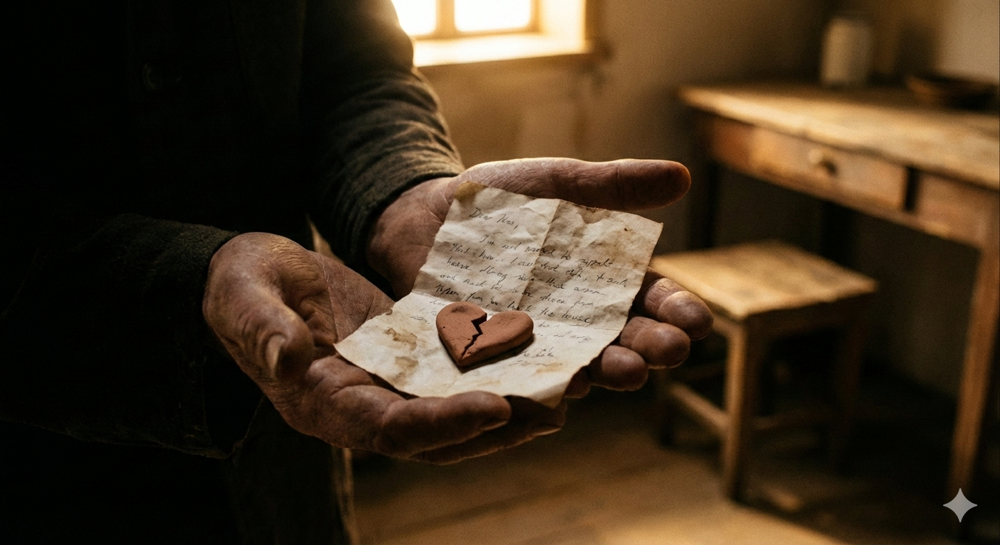
Chciałbym więcej (Poezja niedoskonałej miłości)
Często czujemy się niewystarczająco jak jesteśmy konfrontowani z Bożą miłością (albo nawet miłością drugiego człowieka). Ale może nie chodzi wtedy o to, żebyśmy kochali doskonale, ale kochali tak jak właśnie potrafimy.
23 Stycznia 2026
Czytaj więcej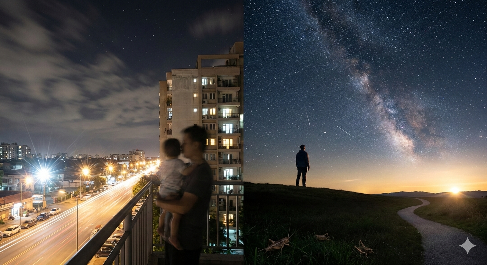
Niebo pełne gwiazd
Chociaż nocne niebo zachwyca blaskiem gwiazd będących jedynie echem przeszłości, warto skierować wzrok przed siebie i pod własne stopy, by z wdzięcznością i uważnością budować nowy dzień w realnie otwierającej się przed nami przyszłości.
22 Stycznia 2026
Czytaj więcej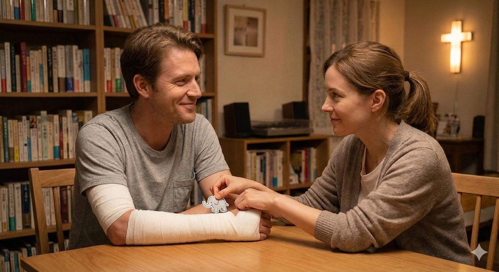
Jakiej miłości pragnie mężczyzna w związku?
Prawdziwa miłość w relacji to ofiarne dążenie do Boga i wzajemne wspieranie się w słabościach, gdzie mężczyzna znajduje w kobiecie czułą „pomoc”, a oboje rezygnują z iluzorycznej niezależności, by wspólnie nieść swoje krzyże i ratować się nawzajem z wirów życia.
18 Stycznia 2026
Czytaj więcejZdobywanie gór z Bogiem
Prawdziwa wdzięczność polega na dostrzeżeniu, że każdy nasz sukces i przetrwana trudność są owocem dyskretnej, miłosiernej obecności Boga, który wspiera nas na każdym etapie życiowej wspinaczki, nawet gdy w swojej naiwności przypisujemy zasługi wyłącznie sobie.
12 Stycznia 2026
Czytaj więcej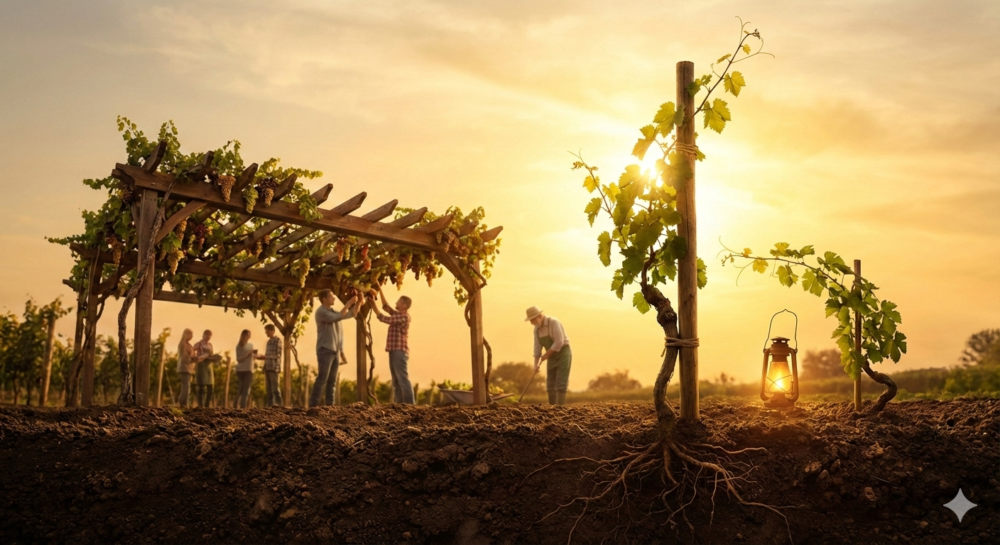
O latoroślach winnych
Człowiek, będąc pod opieką dobrego Ogrodnika, osiąga pełnię rozwoju i bezpieczeństwo poprzez głębokie zakorzenienie w wartościach, wytrwałe dążenie ku Bogu oraz wsparcie we wspólnocie, co pozwala mu przetrwać trudności i wydać dobry owoc.
10 Stycznia 2026
Czytaj więcejZabieganie i warstwy ludzkiego serca
Niszcząca ucieczka przed samym sobą w codziennym pędzie wymaga zatrzymania się i zrzucenia masek, aby poprzez odważne zanurzenie w głębię własnego serca i akceptację przeszłości dotrzeć do wewnętrznego, uzdrawiającego światła Bożej obecności.
1 Stycznia 2026
Czytaj więcejDlaczego chodzimy do kościoła
Choć Bóg jest obecny wszędzie, udział we mszy świętej jest najpełniejszym i najbardziej osobistym spotkaniem z Nim, które – podobnie jak randka z ukochaną osobą – pozwala na budowanie intymnej więzi twarzą w twarz.
20 Grudnia 2025
Czytaj więcej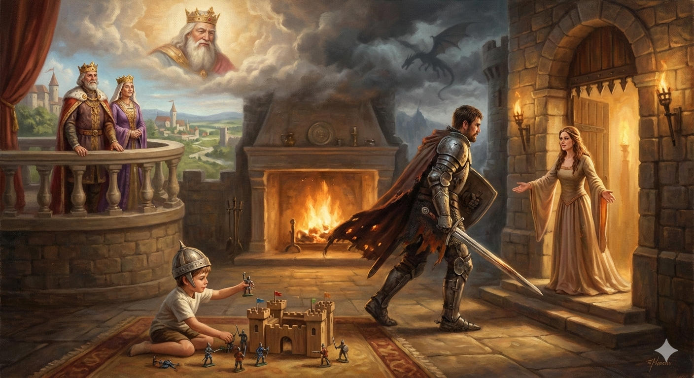
O rycerzach i księżniczkach
Męskość to nieustanna droga rycerza, który hartuje się w walce o wyższe wartości, by dzięki kojącemu wsparciu kochającej kobiety i mądrości Boskiego Ojca dojrzeć do roli mądrego króla budującego bezpieczny dom.
14 Grudnia 2025
Czytaj więcej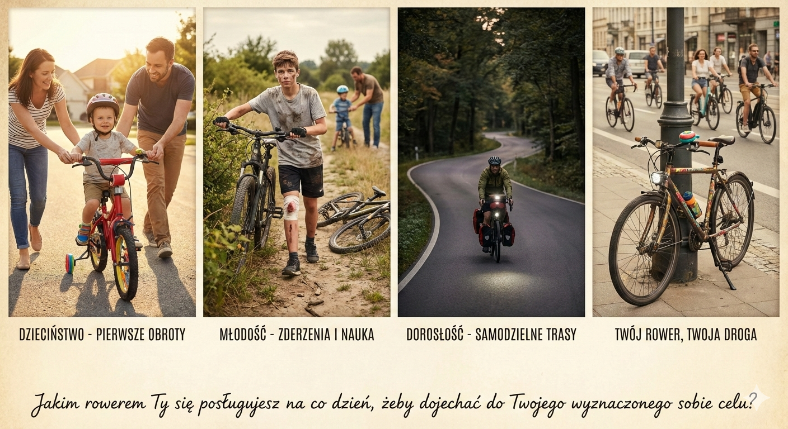
Jakim rowerem jedziesz przez życie?
Życie jest jak podróż rowerem, która ewoluuje od wspieranych przez rodziców początków i błędów młodości aż po w pełni samodzielne oraz świadome kształtowanie własnej drogi i narzędzi potrzebnych do osiągnięcia celu.
25 Listopada 2025
Czytaj więcejKominek i kwiatek
Miłość to wymagający proces, który dzięki wzajemnemu zaangażowaniu, szanowaniu wolnej przestrzeni i duchowemu fundamentowi pozwala zachować ciepło i życie w relacji, podobnie jak dbanie o ogień w kominku czy regularne podlewanie kwiatów.
20 Listopada 2025
Czytaj więcej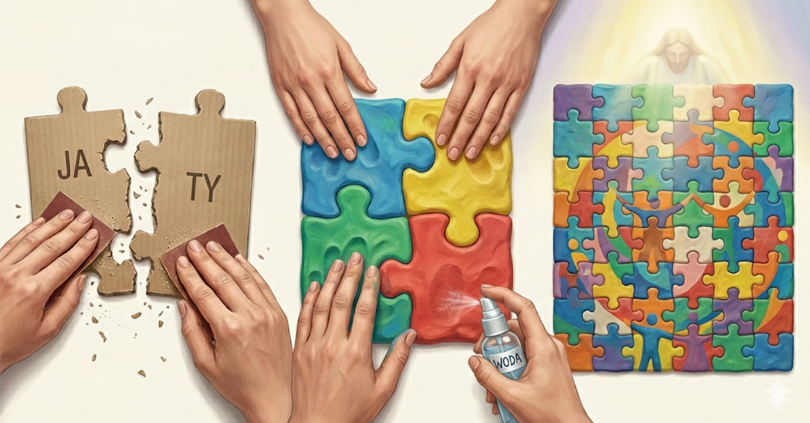
Ludzie są jak kawałki puzzli
Zamiast brutalnie dopasowywać się do innych, powinniśmy pielęgnować w sobie elastyczność „plasteliny”, która pozwala na łagodne, wzajemne kształtowanie się i wspólne budowanie pięknej, życiowej mozaiki bez utraty własnej tożsamości.
16 Listopada 2025
Czytaj więcejKażdy człowiek jest malowidłem
Ludzkie życie to nieustanny proces codziennego modyfikowania i wzbogacania własnego portretu, który – choć oparty na fundamencie nakreślonym przez rodziców – staje się unikalnym dziełem dzięki kolejnym warstwom naszych doświadczeń.
9 Listopada 2025
Czytaj więcejPokorny nie tak jak orzeł
Wywyższanie się jest jak orzeł, który rozkłada swoje skrzydła, żeby można było widzieć wszystkie jego pióra.
27 Października 2025
Czytaj więcejPianista
O pokorze: pianista jest tylko taki dobry jak jego nuty.
10 Października 2025
Czytaj więcej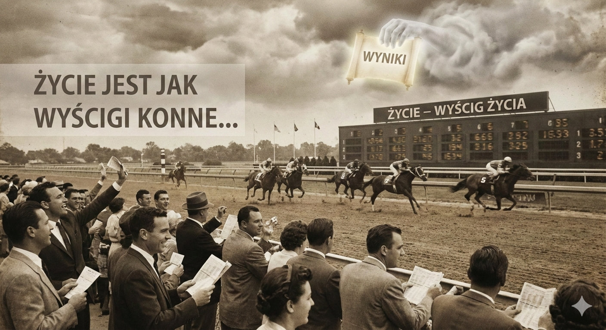
Życie jest jak wyścigi konne
Jeśli się cieszymy nawet kibicując naszym stratom, a tym bardziej jeśli się naszemu koniowi jednak powiedzie, to czy możemy przegrać nasz wyścig życiowy?
6 Października 2025
Czytaj więcej
Nawrócenie to stanie na rękach
Nawrócenie to jak stanie na rękach, które symbolizuje odwrócenie perspektywy życiowej, puszczanie rzeczy, do których jesteśmy przywiązani, i ciągły wysiłek, który wymaga wsparcia innych, by wytrwać w tej nowej, chwiejnej pozycji.
3 Sierpnia 2025
Czytaj więcej
Dobry malarz i miłość w chrześcijaństwie
Patrząc na obraz Boga jako dobrego malarza, widzimy, że nasza miłość do Boga jest ściśle powiązana z miłością siebie samego i miłością bliźniego.
2 Sierpnia 2025
Czytaj więcej
Osądzanie innych ludzi
Bądźmy miłosierni dla drugiego człowieka i nie osądzajmy go pochopnie. Wszyscy jesteśmy ludźmi i nasze wady mamy.
22 Lutego 2025
Czytaj więcej
Wolna wola i wszechwiedzący Bóg
Człowiek może mieć wolną wolą, nawet jeśli Bóg jest wszechwiedzący, bo Bóg jest poza czasem.
6 Grudnia 2024
Czytaj więcej